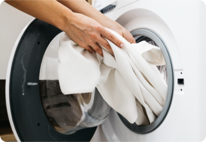

WHY COMPLIANCE MATTERS
Following uniform standards helps maintain a professional, consistent and safe work environment. It supports a cohesive Delta identity and helps customers recognize trained team members.
A guide to wearing your uniform with confidence, comfort, and safety.
Following uniform standards helps maintain a professional, consistent and safe work environment. It supports a cohesive Delta identity and helps customers recognize trained team members.
Wear garments and accessories according to the uniform guidelines. Consistent use is essential for evaluating fit, durability, comfort and performance.
Follow the standards for your workgroup. Uniform compliance supports safety, security and operational efficiency, including regulatory and workplace requirements.
Review the approved garment and accessory styling instructions in the Distinctly Delta Wear Test Hub.
Learn how to combine uniform pieces and accessories for a consistent, professional look.
Swipe to explore the uniform collection →
Neck ties, scarves, dress belts and outerwear belts must use the approved styling and tying methods. Refer to the step-by-step instructions for each accessory.
The handbook illustrates an 11-step Windsor knot. “Windsor,” “Double Windsor,” and “Full Windsor” refer to the same knot.
Wrap the belt around your waist and shift it left. Leave the left tail longer. Cross both tails and tie a knot. Make a loop with the longer left tail around the right end.
Pull the single loop through the knot. Lift it to even the belt ends. The single-loop bow should sit on the left side of your body.
When pairing overalls with the ANSI polo, the ANSI PPE safety vest is still required.
Wear the ANSI safety vest over outerwear, including the winter shell, jacket, bib and vest. If a mid-layer is your outermost garment, wear the ANSI PPE vest over it.
The handbook directs team members to the “How to Pair” resource on the Distinctly Delta Wear Test Hub for the comprehensive garment pairing guide.
PAIRING TUTORIALS
Original Delta handbook illustrations can be placed in the assets folder.
Follow all 11 illustrated steps in order.
 Add original Windsor illustration:
Add original Windsor illustration: assets/windsor-steps.pngFull Windsor — a polished, balanced finish.
 Add original dress belt illustration:
Add original dress belt illustration: assets/dress-belt-steps.pngKeep your uniform looking its best throughout the wear test.
Follow the label on each garment to help prevent shrinking, fading, warped seams and loose buttons. Proper care preserves fit, appearance and performance.
Only the blazer and coat dress are designated dry clean only to preserve their structure and tailored appearance.
All other garments in the collection are machine washable. Always follow the garment’s specific care label.
Machine wash (normal cycle), do not wash, bleach (when needed), and do not bleach.
Tumble dry (any heat), tumble dry (low heat), tumble dry (normal heat), and dry flat.
Low-temperature iron: maximum 230°F. Medium: maximum 300°F. High: maximum 390°F. The handbook also includes a dry-clean symbol.
Delta will not reimburse dry-cleaning costs. If damage or issues result from not following care instructions, additional garments will not be provided.
Use the original Delta handbook symbols to check washing, drying, ironing and dry-cleaning instructions.

Add original care symbols:assets/care-symbols.png